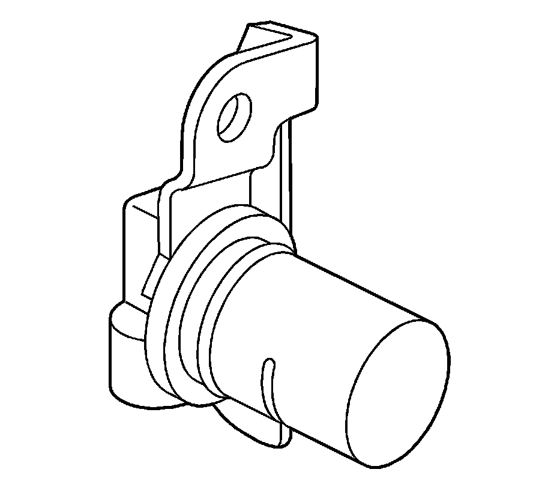

Speed Sensor and Case Extension Installation
Speed Sensor and Case Extension Installation
Tools Required
^ J 21426 Rear Seal Installer
^ J 39440 Extension Housing Seal Installer or equivalent
1. Using the J 21426, install an output shaft sleeve (690) and an output shaft seal (691).
Do not push the sleeve past the machined surface on the output shaft.
2. Install the case extension to case seal (30) and the case extension (31).
Notice: Refer to Fastener Notice.
3. Install the case extension to case bolts (32).
Tighten the bolts to 45 N.m (33 lb ft).

4. Inspect the transmission speed sensor for the following conditions:
^ Cracks
^ Nicks
^ Damage
5. Install a new O-ring seal (37) on the internal transmission speed sensor (36).
6. Install the internal transmission speed sensor (36).
7. Install the speed sensor retaining bolt (35).
Tighten the bolt to 12 N.m (9 lb ft).
Important: If installing a slip yoke (booted) type seal (34), position drain hole (1) toward the bottom of transmission within area shown.
8. Using the J 21426 and J 39440 or equivalent, install the case extension oil seal assembly (34) (model dependent).